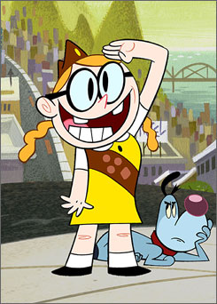
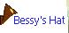
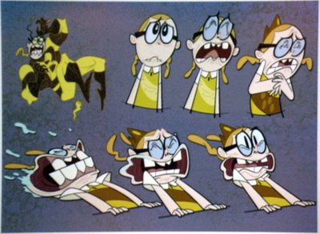

The Mighty B! Type: TV Show. Channels on: 299 NIK1, 300 NIK2, and 302 NKTNS.

Characters
Characters
Bessy Higgenbottom
She is a little girl, voiced by the creator of the show! She always is wearing her uniform, and dreams of becoming "The Mighty Bee".
Happy Higgenbottom
Bessy's dog. He was once a unamed dog at the "Wharf", but then he went to Bessy's house and he is scared of entering a single dog show. The chewed ear of his is not perfect, and Bessy claims that she hates anything perfect, but I bet she wouldn't say that she didn't like Jesus, in front of him...
Bessy's Items:
 This is part of her uniform. It's brown with a little badge like emblem on it with a bee icon on it.

Bessy has many emotions. She sometimes overreacts Even she is crazy... To Penny, who she chooses as her partner in many events.